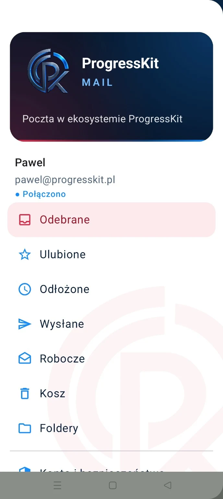
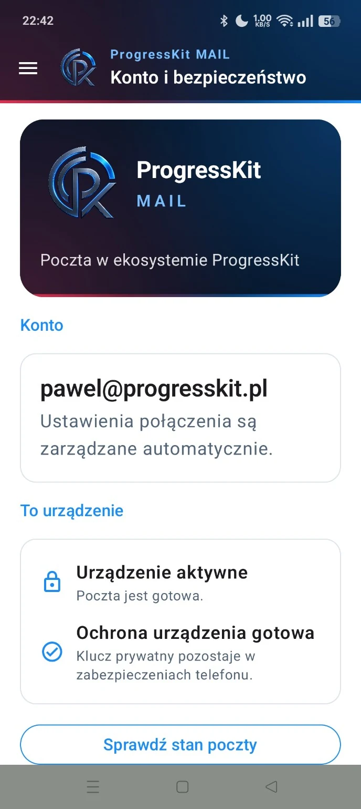
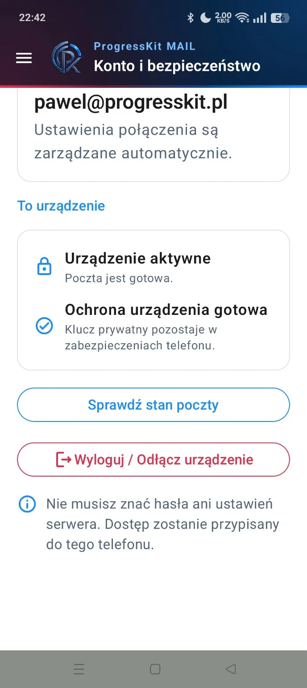
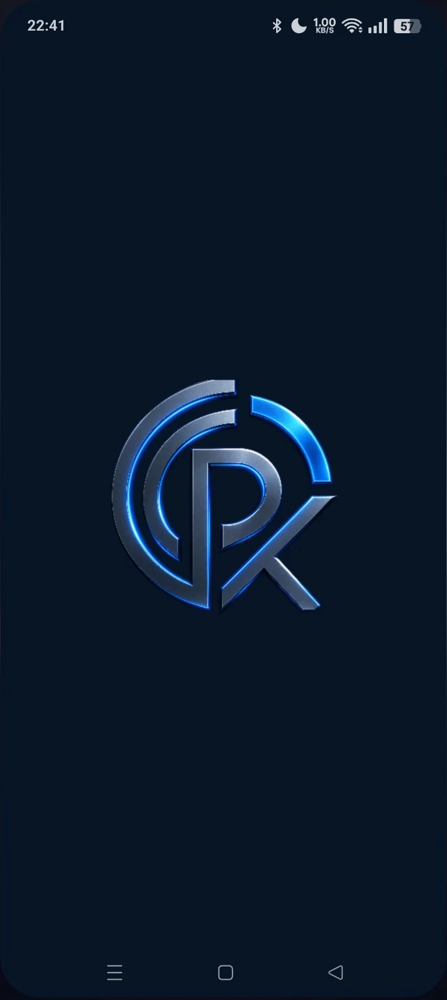
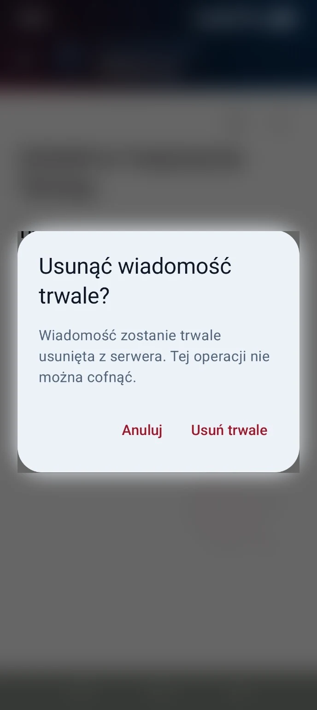

System budowany od serwera i autoryzacji urządzenia po aplikację na Androida. Nie jest to makieta: klient odbiera realne wiadomości, konto jest przypisane do urządzenia, a konfiguracja połączenia jest zarządzana automatycznie.
Realna wiadomość odebrana przez ProgressKit Mail. Widok nie jest makietą.DOWÓD DZIAŁANIA
Najpierw realny system. Potem opowieść.
Realny odbiórWiadomość odebrana w kliencie Android.
Device-bound accessDostęp przypisany do konkretnego urządzenia.
Automatyczna konfiguracjaUżytkownik nie wpisuje ręcznie serwera ani hasła.
Własny backend pocztowyInfrastruktura, DNS i warstwa uwierzytelniania pozostają pod kontrolą ProgressKit.
REALNE EKRANY
Sześć widoków z działającej aplikacji.
Bez renderów i bez udawania gotowego produktu. To aktualne ekrany klienta Android. W ujęciu z trwałym usuwaniem treść prawdziwej wiadomości została celowo zamazana.
Odebrane — realna wiadomość widoczna w kliencie Android.

Menu aplikacji i struktura skrzynki.

Konto — konfiguracja połączenia zarządzana automatycznie.

Bezpieczeństwo — aktywne urządzenie i klucz pozostający w zabezpieczeniach telefonu.

Ekran startowy aplikacji.

Trwałe usuwanie wiadomości.Treść wiadomości w tle została zamazana ze względu na prywatność.
ARCHITEKTURA
Jeden mechanizm od telefonu do serwera.
Klient mobilny nie jest osobnym eksperymentem doklejonym do skrzynki. Aplikacja, autoryzacja urządzenia, provisioning i infrastruktura pocztowa są projektowane jako jeden system.
Android Client
Device Auth
Provisioning API
IMAP / SMTP
Mail Server
DNS / SPF / DKIM / DMARC
STATUS
Pokazuję to, co działa — i to, co nadal rośnie.
DZIAŁA
Infrastruktura i odbiór
własna domena i serwer pocztowy
DNS, SPF, DKIM i DMARC
provisioning i recovery urządzenia
autoryzacja urządzenia
realny odbiór wiadomości w kliencie Android
W ROZWOJU
Klient Android
dalsze dopracowanie synchronizacji i stanów UI
wysyłka SMTP jako kolejny etap funkcjonalny
powiadomienia o nowych wiadomościach
dalszy UX skrzynki i obsługi konta
Niezależność zaczyna się od podstawowych narzędzi. Technologia ma dawać kontrolę — nie na odwrót.